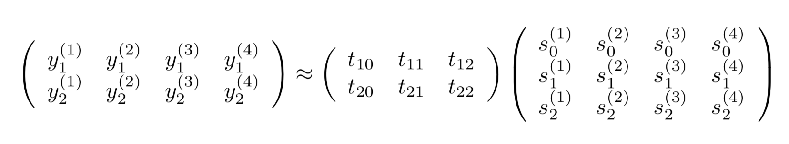

原稿用紙の表の4頂点に位置する4字の（マスの左上の）座標をGIMPで取ると、
y1, y2 s1 s2
左上: 249, 305 ---> 0, 0
右上: 1796, 303 ---> 19, 0
左下: 249, 1002 ---> 0, 6
右下: 1797, 1000 ---> 19, 6
である。うまいパラメータt10, t11, t12, t20, t21, t22を持ってきて、
となるようにしてやれば良い。ただしs0たちは全部1である。
Y ≒ TSで最小二乗法をやるのでYST=TSSTを解けばよく、T=YST(SST)-1なのでTは
[[ 2.48750000e+02 8.14473684e+01 8.33333333e-02] [ 3.05000000e+02 -1.05263158e-01 1.16166667e+02]]
なるほど。実際にやってみると上手くいったのでやったぜ。
それぞれの画像に分割して保存していかねば。
今回もPythonを使う。